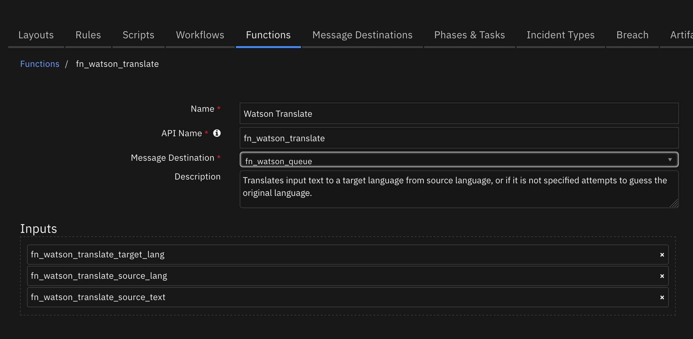

Watson Translate¶
Table of Contents¶
Release Notes¶
Version |
Date |
Notes |
|---|---|---|
1.1.0 |
09/2021 |
App Host support |
1.0.0 |
02/2019 |
Initial Release |
Overview¶
Resilient Circuits Components for ‘fn_watson_translate’
This function integrates Watson Translator with the IBM SOAR platform to provide translation services. The Watson Translation service supports multiple languages, uses Neural Networks for processing and allows building custom models. The Watson Translate function accepts text to be translated, targets language and optionally source language (in its absence Watson will attempt to identify the language) and returns translated text and its confidence percentage. Find out more at: https://www.ibm.com/watson/services/language-translator/.
Key Features¶
Multiple language translation
Machine learning identification of source language
Requirements¶
This app supports the IBM Resilient SOAR Platform and the IBM Cloud Pak for Security.
Resilient platform¶
The Resilient platform supports two app deployment mechanisms, App Host and integration server.
If deploying to a Resilient platform with an App Host, the requirements are:
Resilient platform >=
39.0.6328.The app is in a container-based format (available from the AppExchange as a
zipfile).
If deploying to a Resilient platform with an integration server, the requirements are:
Resilient platform >=
39.0.6328.The app is in the older integration format (available from the AppExchange as a
zipfile which contains atar.gzfile).Integration server is running
resilient_circuits>=39.0.0.If using an API key account, make sure the account provides the following minimum permissions:
Name
Permissions
Org Data
Read
Function
Read
The following Resilient platform guides provide additional information:
App Host Deployment Guide: provides installation, configuration, and troubleshooting information, including proxy server settings.
Integration Server Guide: provides installation, configuration, and troubleshooting information, including proxy server settings.
System Administrator Guide: provides the procedure to install, configure and deploy apps.
The above guides are available on the IBM Knowledge Center at ibm.biz/resilient-docs. On this web page, select your Resilient platform version. On the follow-on page, you can find the App Host Deployment Guide or Integration Server Guide by expanding Resilient Apps in the Table of Contents pane. The System Administrator Guide is available by expanding System Administrator.
Cloud Pak for Security¶
If you are deploying to IBM Cloud Pak for Security, the requirements are:
IBM Cloud Pak for Security >= 1.4.
Cloud Pak is configured with an App Host.
The app is in a container-based format (available from the AppExchange as a
zipfile).
The following Cloud Pak guides provide additional information:
App Host Deployment Guide: provides installation, configuration, and troubleshooting information, including proxy server settings. From the Table of Contents, select Case Management and Orchestration & Automation > Orchestration and Automation Apps.
System Administrator Guide: provides information to install, configure, and deploy apps. From the IBM Cloud Pak for Security Knowledge Center table of contents, select Case Management and Orchestration & Automation > System administrator.
These guides are available on the IBM Knowledge Center at ibm.biz/cp4s-docs. From this web page, select your IBM Cloud Pak for Security version. From the version-specific Knowledge Center page, select Case Management and Orchestration & Automation.
Proxy Server¶
The app does not support a proxy server.
Python Environment¶
Both Python 2.7 and Python 3.6 are supported. Additional package dependencies may exist for each of these packages:
bs4
resilient_circuits>=39.0.0
ibm-watson
ibm_cloud_sdk_core
Installation¶
Install¶
To install or uninstall an App or Integration on the Resilient platform, see the documentation at ibm.biz/resilient-docs.
To install or uninstall an App on IBM Cloud Pak for Security, see the documentation at ibm.biz/cp4s-docs and follow the instructions above to navigate to Orchestration and Automation.
App Configuration¶
The following table provides the settings you need to configure the app. These settings are made in the app.config file. See the documentation discussed in the Requirements section for the procedure.
Config |
Required |
Example |
Description |
|---|---|---|---|
fn_watson_translate_api |
Yes |
|
Your API key for REST calls |
fn_watson_translate_version |
Yes |
|
Version of Watson service to use. |
fn_watson_translate_url |
Yes |
|
URL and instance to the Watson service. |
Function - Watson Translate¶
Translates input text to a target language from source language, or if it is not specified attempts to guess the original language.

Inputs:
Name |
Type |
Required |
Example |
Tooltip |
|---|---|---|---|---|
|
|
No |
|
Source language’s 2 character ID |
|
|
Yes |
|
Text to be translated |
|
|
Yes |
|
Target language’s 2 character ID |
Outputs:
results = {
"value": "translated text",
"confidence": 80,
"language": 'fr',
"source_lang": 'en'
}
Example Pre-Process Script:
inputs.fn_watson_translate_source_text = note.text.content
Example Post-Process Script:
note.addNote("Translated by Watson: \n" + results.value)
Rules¶
Rule Name |
Object |
Workflow Triggered |
|---|---|---|
Example: Watson Translate Note |
note |
|
Languages Supported:¶
Use the two character representation for your source and target language:
af:Afrikaans
ar:Arabic
az:Azerbaijani
ba:Bashkir
be:Belarusian
bg:Bulgarian
bn:Bengali
ca:Catalan
cs:Czech
cv:Chuvash
cy:Welsh
da:Danish
de:German
el:Greek
en:English
eo:Esperanto
es:Spanish
et:Estonian
eu:Basque
fa:Persian
fi:Finnish
fr:French
ga:Irish
gu:Gujarati
he:Hebrew
hi:Hindi
hr:Croatian
ht:Haitian
hu:Hungarian
hy:Armenian
is:Icelandic
it:Italian
ja:Japanese
ka:Georgian
kk:Kazakh
km:Central Khmer
ko:Korean
ku:Kurdish
ky:Kirghiz
lo:Lao
lt:Lithuanian
lv:Latvian
ml:Malayalam
mn:Mongolian
mr:Marathi
ms:Malay
mt:Maltese
my:Burmese
nb:Norwegian Bokmal
ne:Nepali
nl:Dutch
nn:Norwegian Nynorsk
pa:Punjabi
pa-PK:Punjabi (Shahmukhi script, Pakistan)
pl:Polish
ps:Pushto
pt:Portuguese
ro:Romanian
ru:Russian
si:Sinhala
sk:Slovakian
sl:Slovenian
so:Somali
sq:Albanian
sr:Serbian
sv:Swedish
ta:Tamil
te:Telugu
th:Thai
tl:Tagalog
tr:Turkish
uk:Ukrainian
ur:Urdu
vi:Vietnamese
zh:Simplified Chinese
zh-TW:Traditional Chinese
Troubleshooting & Support¶
Refer to the documentation listed in the Requirements section for troubleshooting information.
For Support¶
This is a IBM Community provided App. Please search the Community https://ibm.biz/resilientcommunity for assistance.